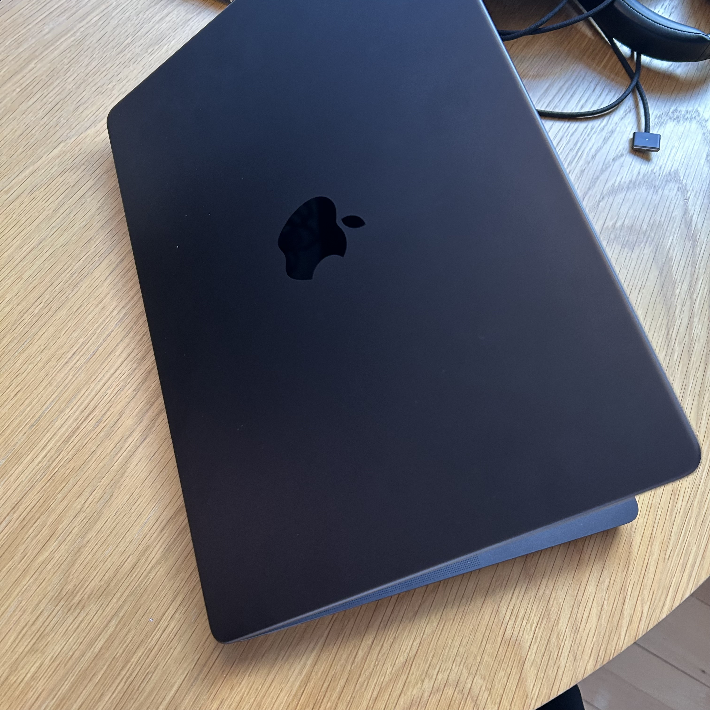

Min computer

Type
Min computer er bare så fin og næsten ny. Det er min Første Mac efter at have Windows i mange mange år
Specifikationer
- Model: MacBook pro
- Processor: Apple M4 pro
- Farve: Space grey
Min computer er bare så fin og næsten ny. Det er min Første Mac efter at have Windows i mange mange år